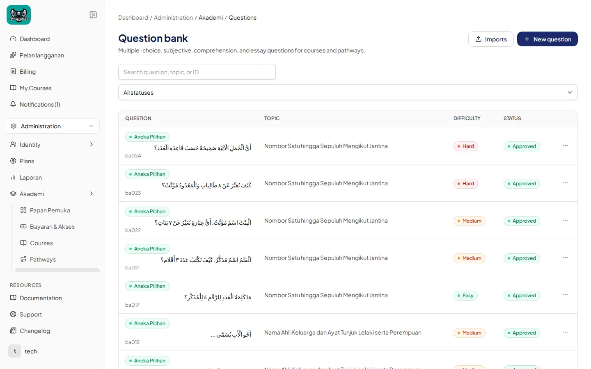
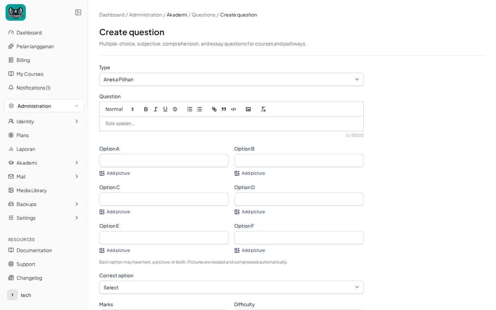
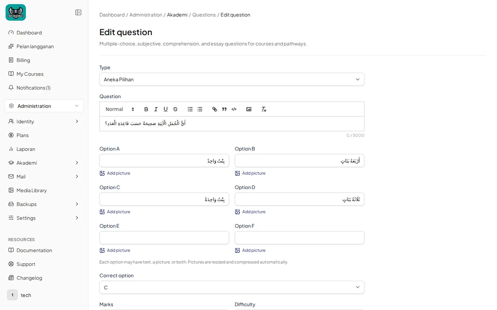
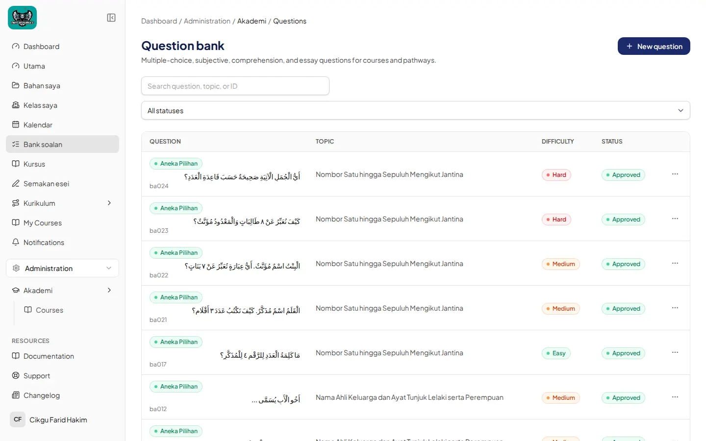

Bagaimana mengurus Bank soalan
Cipta soalan, pilihan, kunci jawapan, kumpulkan ke set, dan perbezaan Guru vs Administrator. Contoh utama: soalan UASA Darjah 3; contoh kedua: bank UPKK (144 soalan).
Bahasa Melayu
1. Buka Question bank
- Administration › Akademi › Questions → halaman Question bank.
- Butang Imports dan + New question. Carian: Search question, topic, or ID. Penapis status: All statuses.
- Lajur: Question (badge jenis cth. Aneka Pilihan), Topic, Difficulty, Status (Approved).

2. Cipta soalan
- + New question → Create question.
- Type: Aneka Pilihan, Subjektif, Pemahaman, atau Esei.
- Medan Question (placeholder Tulis soalan…).
- Untuk Aneka Pilihan: Option A–F (boleh Add picture), kemudian Correct option.
- Marks, Difficulty, dan medan lain di bahagian bawah borang.

3. Sunting & kunci jawapan
- Buka soalan sedia ada → Edit question.
- Pastikan Correct option ditetapkan (cth. C).

4. Kumpulkan ke set
Soalan diluluskan (Approved) ditag ke laluan (tab Bank soalan pada pathway, cth. 432 untuk UASA Darjah 3). Kemudian ia dipilih ke dalam Set ujian pelajaran — lihat Panduan 3a. Itu cara “set” dibentuk untuk simulasi laluan.
5. Guru vs Administrator
| Tindakan | Administrator / Superadmin | Guru |
|---|---|---|
| Lihat & cipta soalan | Ya | Ya |
| Kemas kini / padam / Approve | Ya | Kemas kini terhad kepada soalan sendiri; tiada Approve menyeluruh |
| Imports | Ya (jika feature Imports on) | Mengikut kebenaran |

English
Open Question bank, create with Type (Aneka Pilihan / Subjektif / Pemahaman / Esei), fill options and Correct option, approve as admin, tag to a pathway, then pick into a lesson Set ujian. Teachers can create; approving others’ items is an administrator task.